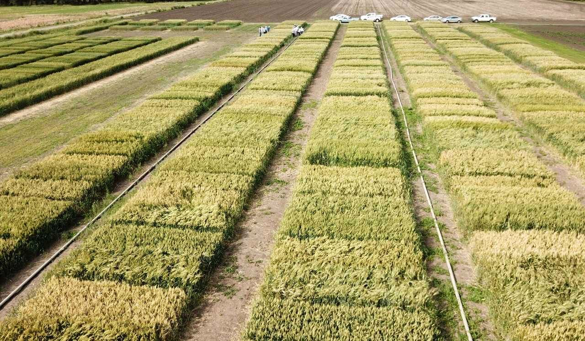

<ion-header [translucent]="true">
  <ion-toolbar>
    <ion-buttons slot="start">
      <ion-back-button class="back" text="" icon="arrow-back-circle-outline" defaultHref="/listacampos"></ion-back-button>
    </ion-buttons>
    <ion-text class="text-center">
      ECR: {{ensayo.rs}}
    </ion-text>
    <ion-avatar slot="end" class="avatar">
      
     </ion-avatar>
  </ion-toolbar>
</ion-header>

<ion-content>
<ion-list >
<ion-item><ion-label class="ion-text-wrap" class= "text-lista">Variedades ensayadas: {{ensayo.variedades}}</ion-label></ion-item>
<ion-item><ion-label class= "text-lista">Densidad de siembra: {{ensayo.ds}}</ion-label></ion-item>
<ion-item><ion-label class= "text-lista">Fertilización: {{ensayo.fertilizacion}}</ion-label></ion-item>
<ion-item><ion-label class= "text-lista">Fecha de siembra: {{ensayo.fs}}</ion-label></ion-item>
<ion-item><ion-label class= "text-lista">Localidad: {{ensayo.localidad}}</ion-label></ion-item>
<ion-item><ion-label class= "text-lista">Geolocalización:</ion-label></ion-item>
</ion-list>

<div id="container">
  </div>

 
</ion-content>
